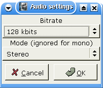

|
Tutoriel de conversion de Mpeg en Divx 1.Préliminaires Cette page présente un exemple d'encodage d'un mpeg1 ou mpeg2 (un DVD par exemple) en AVI, codé en xvid et en mp3 pour l'audio.Seuls les flux mpeg vidéo (m1v et m2v) et flux de programme mpeg sont supportés par Avidemux (mpg/vob). Ce flux doit être mono et non chiffré. Appelons-le stream.mpg Si votre source est un DVD, vous avez tout intérêt à utiliser l'excellent Mplayer de la manière suivante : mplayer -dvd 1 -dumpstream. Cela crée à partir du DVD un vob compatible avec Avidemux. Les fichiers VDR ne sont pas supportés pour le moment. Avidemux ne sait pas lire un flux mpeg. En revanche, il sait lire un index de flux mpeg. Un index de flux mpeg est un fichier de texte simple décrivant le mpeg et indiquant où se trouvent les images. Il a une structure assez proche de celle des fichiers d2v de DVD2AVI, un excellent serveur d'images (frame server) pour Windows. C'est cet index qui permet à Avidemux d'accéder de façon aléatoire à une image précise dans le fichier. Pour générer cet index, vous avez deux possibilités :
Les champs index et mpeg se passent de commentaires. Le champ stream id demande en revanche quelques précisions.
2.Editer la vidéo Cetains DVD (la plupart, en fait) sont codés en 23,976 ips (FILM) et d'autres en 29,96 ips (NSTC), soap par exemple. Dans le premier cas, le lecteur de DVD effectue une opération de conversion à la volée au format NSTC (telecine). L'en-tête mpeg doit toujours indiquer 29,96, puisque cela correspondra toujours au format final. Avidemux se sert de mpeg2dec (avec un petit patch) pour décoder les flux mpeg. Mpeg2dec n'effectue pas d'opération telecine sur les films FILM (et c'est mieux ainsi). Cela veut dire qu'Aavidemux ne peut pas faire la différence entre FILM et NSTC. Aussi, si le mpeg looks vous semble progressif (pas entrelacé) et qu'une désynchronisation évidente apparaît (et s'aggrave), utilisez Video Processing->Change framerate et passez-le à 23,976. Pour les mpeg PAL, il n'y a pas de problème, la cadence est toujours de 25 ips. Vous devriez avoir à présent quelque chose qui ressemble à ceci : 
Il est temps d'appliquer quelques filtres à la vidéo. CTRL+F pour faire apparaître la liste des filtres. 
Nous allons sélectionner le filtre Crop (rogner), pour nous débarasser des bordures noires.Si le flux est suffisamment propre, vous pouvez essayer le bouton autoCrop. Sur cet exemple, les bordures sont très étroires. Nous les avons coloriées en vert pour qu'elles soient plus visibles. 
A présent que l'image a été recadrée, nous allons la redimensionner à dans un format inférieur. Lors de cette opération, ne perdez pas de vue que la plupart des DVD sont en 16/9. Nous allons ouvrir la fenêtre des filtres et sélectionner resize. Nous allons choisir une taille de 480x272, pour avoir un rapport de 16/9, une largeur multiple de 16 et une hauteur multiple de 8. Vous pouvez à tout moment sélectionner un filtre en cliquant sur le bouton configure. Pour voie le résultat, utilisez le bouton preview ou lisez la vidéo avec output enfoncé. Pour information, notre série de filtres vidéo ressemble à ceci : 

Selon la nature de votre source, vous pourrez être tenté d'ajouter d'autres filtres (sous-titrage, suppression de bruit, désentrelacement, ...). Consultez la page video filters à ce sujet. La vidéo est prête, reste à régler son encodage. Vous pouvez ouvrir la fenêtre d'aperçu et vous déplacer dans le film avec l'ascenceur, la fenêtre reflètera vos déplacements. 3.Paramétrer l'encodeur Comme nous voulons encoder la vidéo, nous allons passer la vidéo en mode process. Il est temps à présent de sélectionner un codec. Mes deux préférés sont Xvid et Lavcodec. Vous pouvez utiliser un tutoriel fait pour Xvid sous Windows, car les options sont les mêmes. Pour lavcodec, jetez un oeil à la documentation de mplayer. La version linux de divx n'est pas très riche, c'est pourquoi je ne vais pas en parler. Nous allons lui préférer Xvid pour ce minitutoriel. Nous allons commencer par définir le fichier journal pour la double passe, dont nous aurons peut-être besoin ultérieurement, avec Video processing->Set log file La boîte de dialogue suivante s'affiche avec Video processing->configure codec. Nous choisissons ici 2pass et saisissons la taille finale. Cette taille correspond à celle de la vidéo uniquement et ne comprend pas les données propres à l'avi (overhead). Il est donc bon de prendre une marge de 5%. Nous choisisson ici 600 et cliquons sur Ok. 4.Régler l'audio Si vous utilisez l'audio que vous aviez sélectionné lors de la création de l'index, il n'y a rien à faire. Vous pouvez également utiliser un fichier audio externe en passant par le menu Audio-source. Si vous souhaitez laisser l'audio tel quel, par exemple pour un Xvid+AC3, vous n'avez rien de particulier à faire et pouvez passer toute cette section. Sinon, passez l'audio en mode process et activez (par exemple) Normalize, 48->44. Pour plus de détails, consultez filtres audio Même chose que pour le codec vidéo : sélectionnez-en un, par exemple MP3, et configurez-le. Ici, nous allons choisir 128 kbps joint stéreo : 5.Enregistrer Sélectionnez à présent File->Save avi et patientez plusieurs heures. Et voilà. Avidemux va effectuer la passe 1 puis la passe 2 et encoder l'audio. 
|